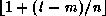

Common Lisp the Language, 2nd Edition

This
section presents a number of complex transducers, including ones that
support conditional computation.
[Function]
choose bools &optional (items bools)
choose-if pred items
Each of these functions takes in a series of elements (items) and returns a series containing the same elements in the same order, but with some elements removed. choose removes itemsj if boolsj is nil or j is beyond the end of bools. If items is omitted, choose returns the non-null elements of bools. choose-if removes itemsj if (pred itemsj) is nil.
(choose #Z(t nil t nil) #Z(a b c d)) => #Z(a c) (collect-sum (choose-if #'plusp #Z(-1 2 -3 4))) => 6
[Function]
expand bools items &optional (default nil)
expand is a quasi-inverse of choose. The output contains the elements of the input series items spread out into the positions specified by the non-null elements in bools-that is, itemsj is in the position occupied by the jth non-null element in bools. The other positions in the output are occupied by default. The output stops as soon as bools runs out of elements or a non-null element in bools is encountered for which there is no corresponding element in items.
(expand #Z(nil t nil t t) #Z(a b c)) => #Z(nil a nil b c) (expand #Z(nil t nil t t) #Z(a)) => #Z(nil a nil)
[Function]
split items &rest test-series-inputs
split-if items &rest test-predicates
These functions are like choose and choose-if except that instead of producing one restricted output, they partition the input series items between several outputs. If there are n test inputs following items, then there are n+1 outputs. Each input element is placed in exactly one output series, depending on the outcome of a sequence of tests. If the element itemsj fails the first k-1 tests and passes the kh test, it is put in the kth output. If itemsj fails every test, it is placed in the last output. In addition, all output stops as soon as any series input runs out of elements. The test inputs to split are series of values; itemsj passes the kth test if the jth element of the kth test series is not nil. The test inputs to split-if are predicates; itemsj passes the kth test if the kth test predicate returns non-null when applied to itemsj.
(split #Z(-1 2 3 -4) #Z(t nil nil t)) => #Z(-1 -4) and #Z(2 3) (multiple-value-bind (+x -x) (split-if #Z(-1 2 3 -4) #'plusp) (values (collect-sum +x) (collect-sum -x))) => 5 and -5
[Function]
catenate &rest series-inputs
catenate combines two or more series into one long series by appending them end to end. The length of the output is the sum of the lengths of the inputs.
(catenate #Z(b c) #Z() #Z(d)) => #Z(b c d)
[Function]
subseries items start &optional below
subseries returns a series containing the elements of the input series items indexed by the non-negative integers from start up to, but not including, below. If below is omitted or greater than the length of items, the output goes all the way to the end of items.
(subseries #Z(a b c d) 1) => #Z(b c d) (subseries #Z(a b c d) 1 3) => #Z(b c)
[Function]
positions bools
positions returns a series of the indices of the non-null elements in the series input bools.
(positions #Z(t nil t 44)) => #Z(0 2 3)
[Function]
mask monotonic-indices
mask is a quasi-inverse of positions. The series input monotonic-indices must be a strictly increasing series of non-negative integers. The output, which is always unbounded, contains t in the positions specified by monotonic-indices and nil everywhere else.
(mask #Z(0 2 3)) => #Z(t nil t t nil nil ...) (mask #Z()) => #Z(nil nil ...) (mask (positions #Z(nil a nil b nil))) => #Z(nil t nil t nil ...)
[Function]
mingle items1 items2 comparator
The series returned by mingle contains all and only the elements of the two input series. The length of the output is the sum of the lengths of the inputs and is unbounded if either input is unbounded. The order of the elements remains unchanged; however, the elements from the two inputs are stably intermixed under the control of the comparator.
The comparator must accept two arguments and return non-null if and only if its first argument is strictly less than its second argument (in some appropriate sense). At each step, the comparator is used to compare the current elements in the two series. If the current element from items2 is strictly less than the current element from items1, the current element is removed from items2 and transferred to the output. Otherwise, the next output element comes from items1.
(mingle #Z(1 3 7 9) #Z(4 5 8) #'<) => #Z(1 3 4 5 7 8 9) (mingle #Z(1 7 3 9) #Z(4 5 8) #'<) => #Z(1 4 5 7 3 8 9)
[Function]
chunk m n items
This function has the effect of breaking up the input series items into (possibly overlapping) chunks of length m. The starting positions of successive chunks differ by n. The inputs m and n must both be positive integers.
chunk produces m output series. The ith chunk provides the ith element for each of the m outputs. Suppose that the length of items is l. The length of each output is . The ith element of the kth output is the (i*n+k)th element of items (i and k counting from zero).
Note that if l<m, there will be no
output elements, and if l-m is not a multiple of n,
the last few input elements will
not appear in the output. If mn,
one can guarantee that the last chunk will contain the last
element of items by catenating
n-1
copies of an appropriate padding value to the end of items.
The first example below shows chunk being used to compute a moving average. The second example shows chunk being used to convert a property list into an association list.
(mapping (((xi xi+1 xi+2) (chunk 3 1 #Z(1 5 3 4 5 6))))
(/ (+ xi xi+1 xi+2) 3))
=> #Z(3 4 4 5)
(collect
(mapping (((prop val) (chunk 2 2 (scan '(a 2 b 5 c 8)))))
(cons prop val)))
=> ((a . 2) (b . 5) (c . 8))